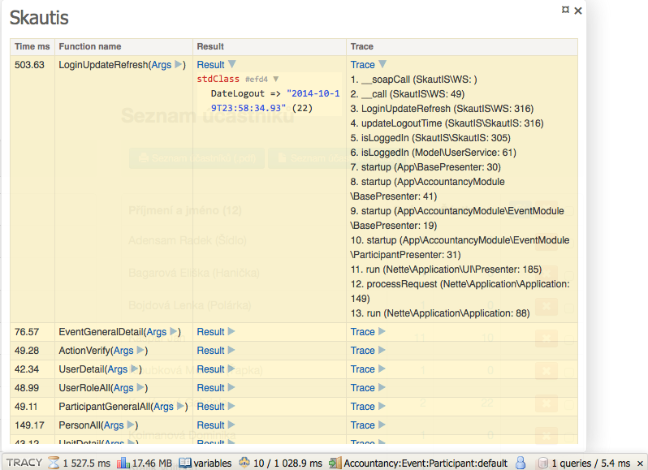

Konfigurace rozšíření
Testovací režim
Volba testMode: TRUE přepne knihovnu do testovacího režimu a všechny požadavky budou prováděny proti http://test-is.skaut.cz/ namísto ostré verze SkautISu.
Cachování WSDL souboru
Pomocí volby cache: FALSE je možné vypnout cachování WSDL souboru. Pokud k tomu nemáte závažný důvod doporučujeme cachování ponechat zapnuté.
Komprese požadavků
Pomocí volby compression: FALSE je možné vypnout kompresi při provádění požadavků na SkautIS. Pokud k tomu nemáte závažný důvod doporučujeme kompresi ponechat zapnutou.
Profiler
Pokud máte nainstalovánou Tracy, nebo používáte Nette verze 2.1, tak se v testovacím modu Nette automaticky aktivuje skautis panel, který sleduje všechny dotazy na skautis.

Panel je možné úplně vypnout pomocí volby profiler: FALSE.